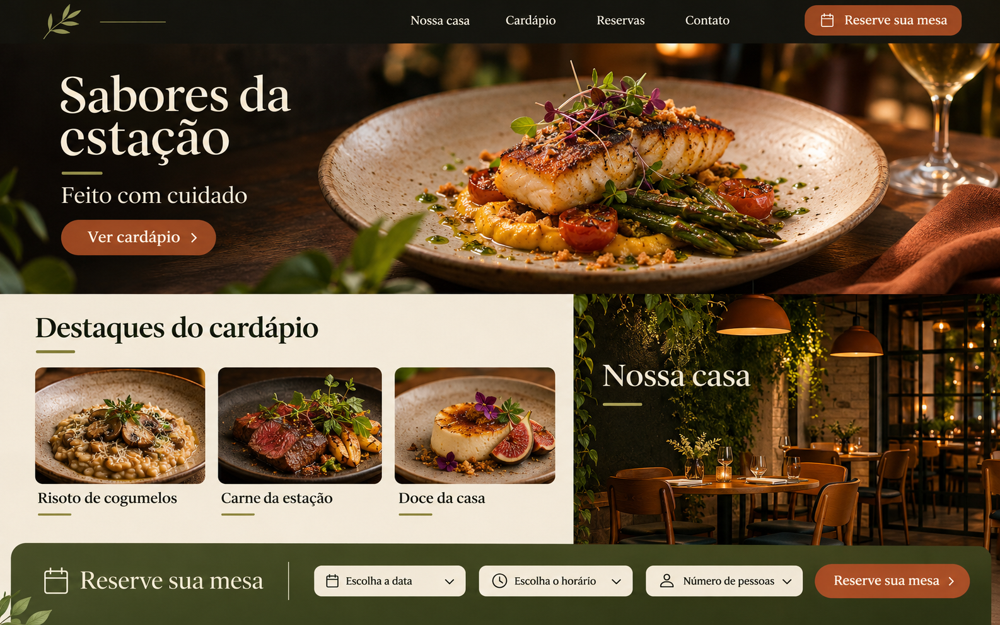
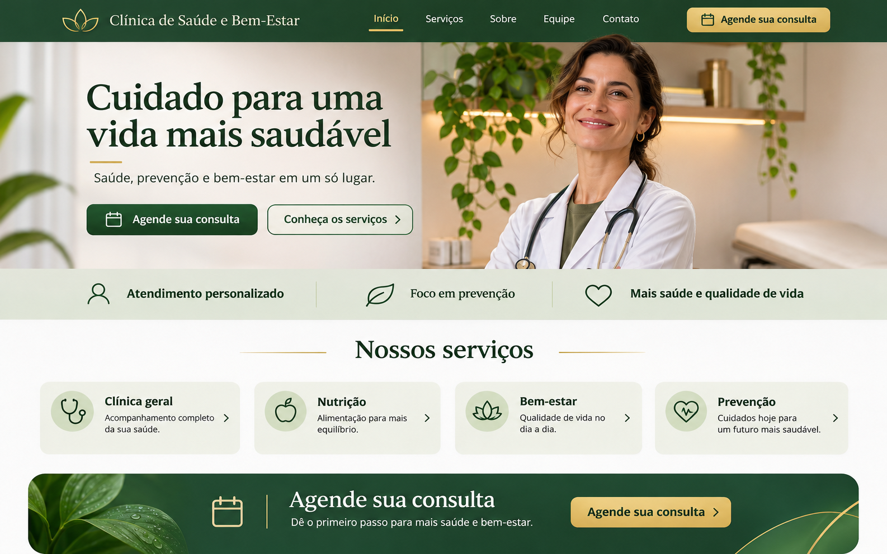
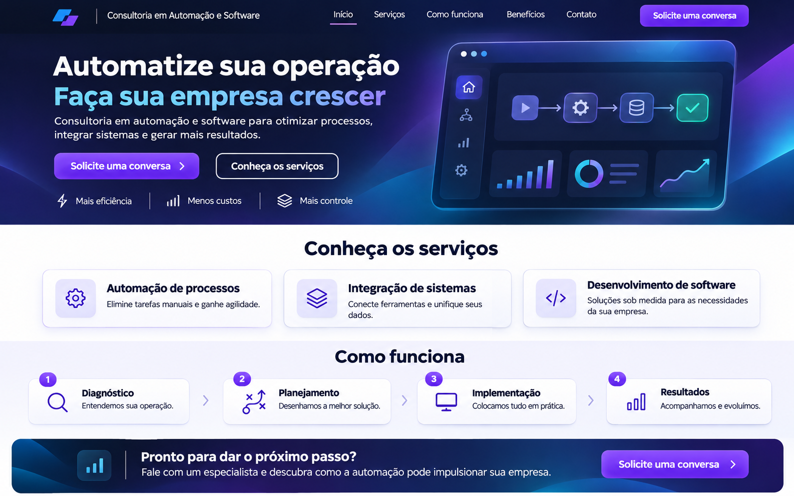

Projeto no ar
Produto próprio · SaaS
MarcaVez
Agenda online para profissionais de serviço. O cliente escolhe o serviço e o horário pelo celular, enquanto o profissional mantém a rotina organizada em um só lugar.
Visitar o MarcaVez
LinkedInDesenvolvimento de produtos digitais
Crio softwares, aplicativos e sites com foco no que realmente importa: resolver problemas, simplificar processos e gerar valor para o seu negócio.
Estratégia antes do código
Experiência simples
Produto sob medida
Evolução contínua
Estúdio de páginas digitais
Para um restaurante, tudo começa pelo sabor. Uma boa página desperta o apetite e aproxima o visitante da reserva.
Ver a coleção de páginas
Projetos selecionados
Conheça projetos que já estão no ar e outras soluções desenvolvidas para organizar operações, apoiar decisões e criar novas experiências.
Produto próprio · SaaS
Agenda online para profissionais de serviço. O cliente escolhe o serviço e o horário pelo celular, enquanto o profissional mantém a rotina organizada em um só lugar.
Visitar o MarcaVezPlataforma · Games
Uma biblioteca digital para descobrir jogos de navegador e projetos para PC, reunidos em uma experiência organizada, acessível e fácil de explorar.
Explorar o catálogoSistema web · Gestão
Uma solução criada para tornar o controle de produtos mais claro e confiável, facilitando a rotina operacional e o acompanhamento das movimentações.
Plataforma · Serviço
Plataforma que organiza informações de garantia e transforma uma verificação trabalhosa em uma experiência direta.
Sistema · Saúde
Projeto de sistema para apoiar rotinas clínicas, com atenção especial à clareza das informações e à experiência de uso.
Sistema web · Financeiro
Ferramenta desenvolvida para organizar cálculos e acompanhar comissões com mais clareza, reduzindo controles manuais e facilitando a conferência dos resultados.
Site · Agendamento
Experiência digital pensada para apresentar serviços e tornar o pedido de agendamento mais simples, acessível e direto para o cliente.
Alguns projetos estão em evolução contínua. Detalhes técnicos e demonstrações podem ser apresentados em uma conversa.
Como posso ajudar
Você não precisa chegar com tudo definido. Eu ajudo a organizar a ideia, encontrar o caminho mais viável e construir a solução.
Landing pages, portfólios e sites institucionais rápidos, responsivos e alinhados ao seu negócio.
Ferramentas para organizar processos, centralizar dados e reduzir o trabalho manual da sua operação.
Da validação da ideia à primeira versão funcional, com decisões guiadas pelo uso real.
Possibilidades para seu negócio
Exemplos conceituais em português para mostrar como diferentes negócios podem ganhar uma presença digital profissional, clara e pronta para converter.

Saúde e bem-estar
Gastronomia

Serviços B2B
Imagens conceituais criadas para demonstrar possibilidades de projeto. Cada site é planejado de acordo com a identidade e os objetivos do cliente.
Caderno do estúdio
No sistema de comissões, a pergunta inicial é simples: como a equipe confere o resultado?
No MarcaVez, o cliente escolhe o serviço e o horário pelo celular.
No Bora de Play, jogos de navegador e projetos para PC dividem a mesma biblioteca.
Sobre mim
Sou Marcelo de Viveiros, formado em Administração, com pós-graduação em Gestão de Pessoas e atualmente estudante de Análise e Desenvolvimento de Sistemas.
Trago mais de 10 anos de experiência com processos. Ao longo dessa trajetória, aprendi a identificar gargalos, organizar rotinas e transformar necessidades reais em melhorias práticas para pessoas e negócios.
Hoje uno essa visão de gestão ao desenvolvimento de software. Antes de escolher a tecnologia, procuro entender o problema — porque um bom produto digital precisa ser simples de usar, útil no dia a dia e preparado para evoluir.
Vamos tirar sua ideia do papel
Conte um pouco sobre o que você quer criar. Mesmo que ainda seja só uma ideia, podemos começar por aí.